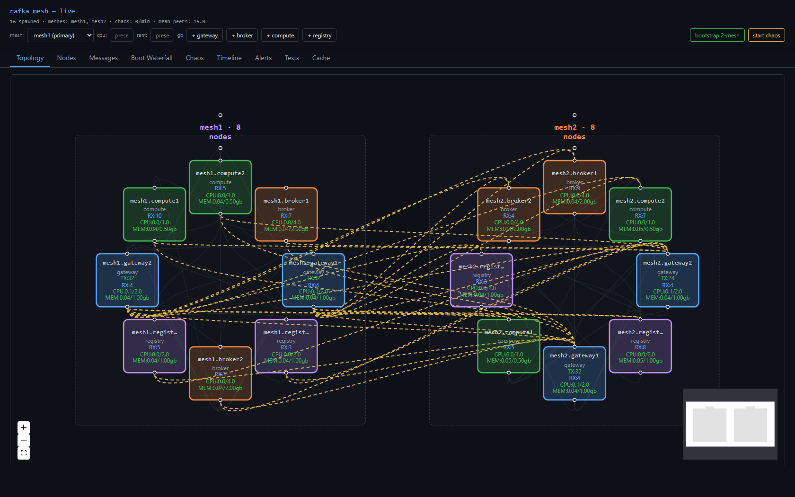
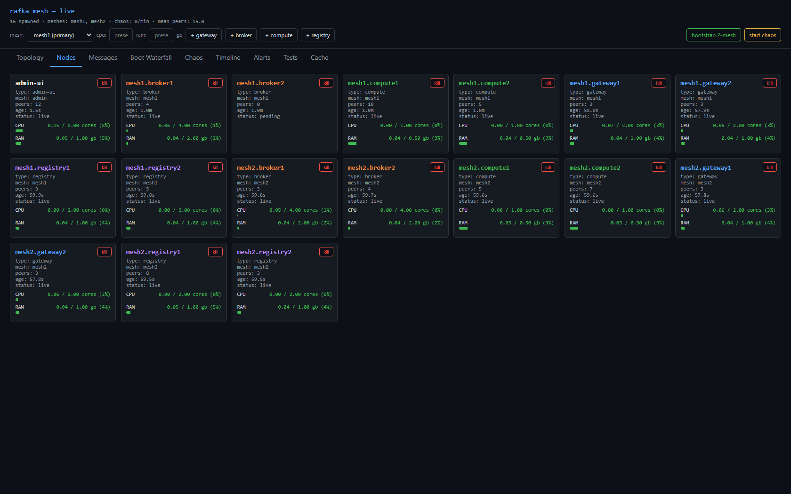
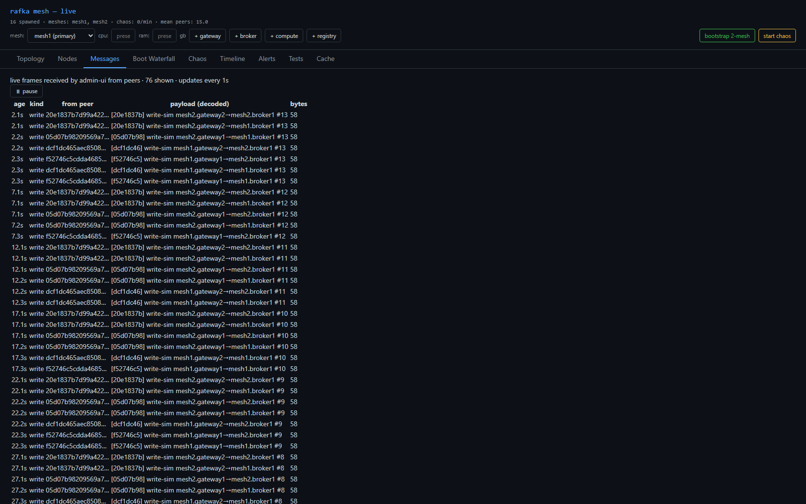
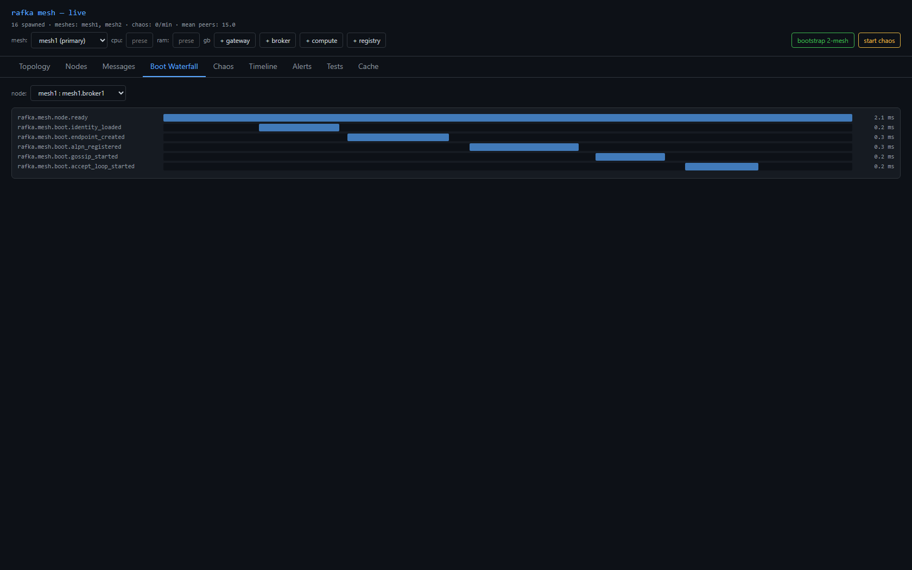
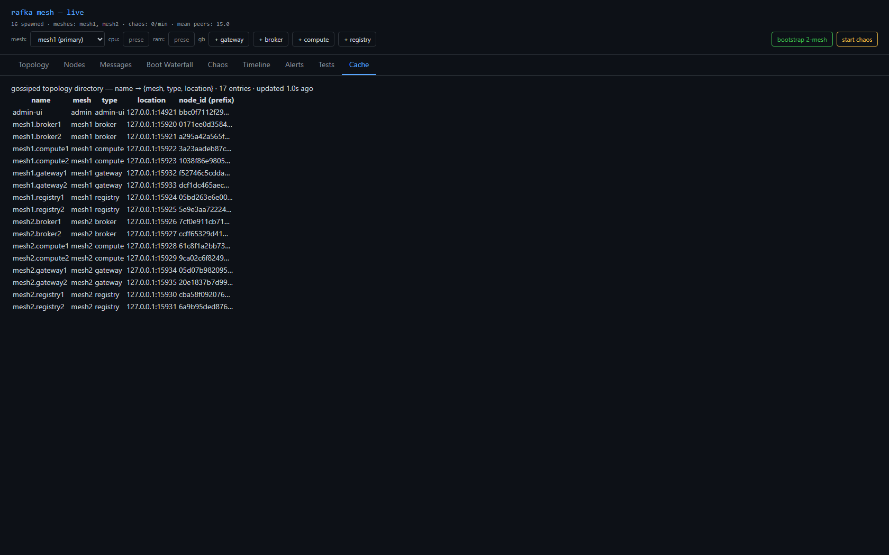
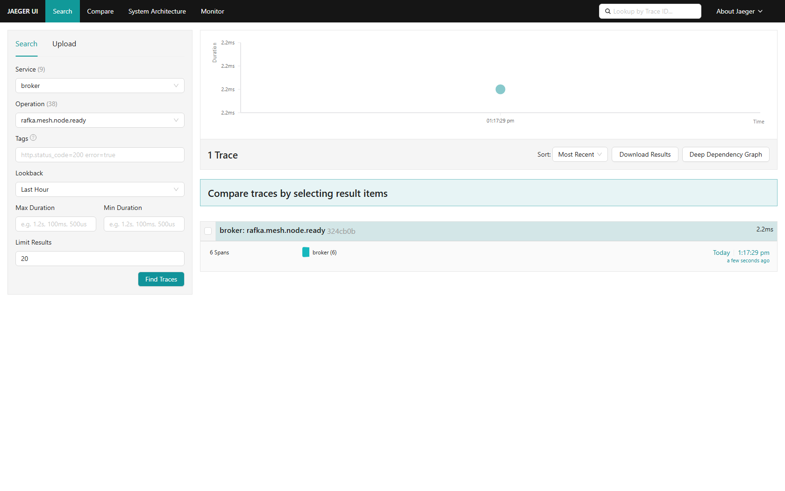
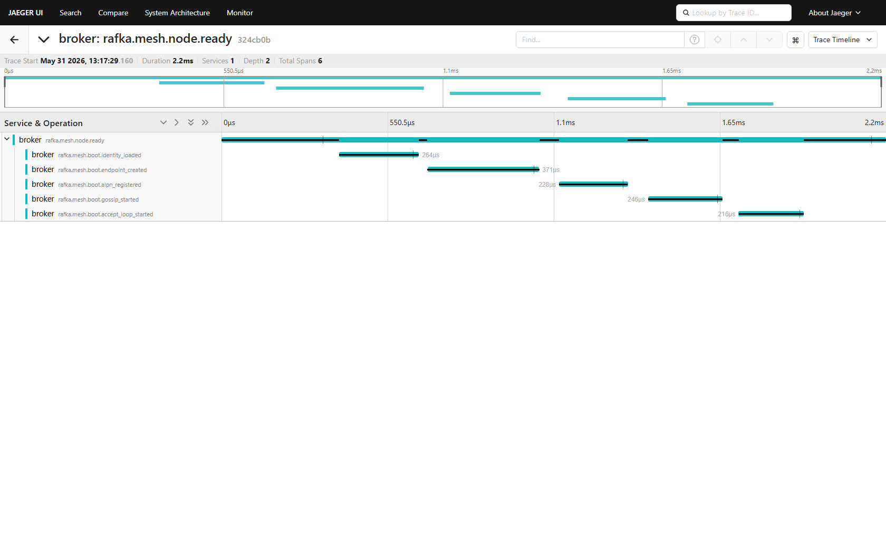

The bridge is gone, and two meshes share a cross-mesh topology cache with real cross-mesh delivery — plus direct-URL tab routing and a completed boot-span chain.
bridge/ crate + member, Role::Bridge, RAFKA_BRIDGE_TARGET_MESHES, the +bridge button, and every bridge reference in bootstrap/seeds/topology/colors/chaos/cli.gateway gets RAFKA_OBSERVER_MESHES = the other meshes + a cross-mesh seed, so its live_digests() spans both meshes and draws the direct gateway→broker edge.mesh1.gateway1 resolves mesh2.broker1 from the cache and writes directly (op_kind=produce)./cache…), client router + axum SPA fallback.identity_loaded moved into node.ready's trace → 6 spans (was 5).cargo check --workspace --tests --no-default-features → 0 errors, 0 warnings (re-ran)./api/topology-cache → 17 entries, 0 bridge, both meshes./api/heartbeats → mesh2.broker1.frames_recv_total = 155 (cross-mesh write lands).GET /cache → HTTP 200 SPA (routing + fallback).324cb0b; spawned mesh1.broker3 (counter increments).



/cache URL — 17 entries, no bridge, no +bridge button


| Criterion | Result |
|---|---|
| cargo check clean (0/0) | ✅ lead re-ran |
| No bridge anywhere (cache, button, crate) | ✅ |
| Cache spans both meshes (17 entries) | ✅ |
| Cross-mesh delivery real (mesh2.broker1 RX) | ✅ 155 frames |
| Boot chain = 6 spans incl. identity | ✅ raw Jaeger 324cb0b |
| Direct-URL tab routing (/cache) | ✅ HTTP 200 SPA |
| UI + Jaeger screenshots; lead verified | ✅ |
_HTML_LEGACY_REMOVED const in admin-ui/src/main.rs still has a + Spawn bridge string — never served (#[allow(dead_code)]). Cosmetic; delete next pass.RAFKA_MDNS_ENABLE=false on a shared host or it mDNS-discovers other fleets' digests. Operational, not a code bug.